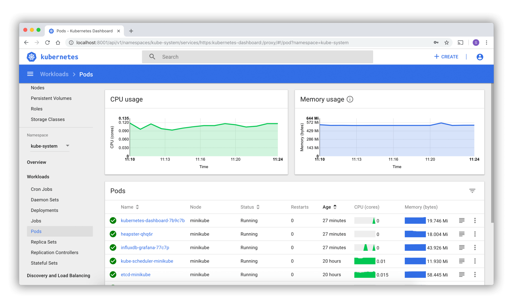

- 00 开篇词 从 0 开始搭建一个企业级 Go 应用.md.html
- 01 IAM系统概述：我们要实现什么样的 Go 项目？.md.html
- 02 环境准备：如何安装和配置一个基本的 Go 开发环境？.md.html
- 03 项目部署：如何快速部署 IAM 系统？.md.html
- 04 规范设计（上）：项目开发杂乱无章，如何规范？.md.html
- 05 规范设计（下）：commit 信息风格迥异、难以阅读，如何规范？.md.html
- 06 目录结构设计：如何组织一个可维护、可扩展的代码目录？.md.html
- 07 工作流设计：如何设计合理的多人开发模式？.md.html
- 08 研发流程设计（上）：如何设计 Go 项目的开发流程？.md.html
- 09 研发流程设计（下）：如何管理应用的生命周期？.md.html
- 10 设计方法：怎么写出优雅的 Go 项目？.md.html
- 11 设计模式：Go常用设计模式概述.md.html
- 12 API 风格（上）：如何设计RESTful API？.md.html
- 13 API 风格（下）：RPC API介绍.md.html
- 14 项目管理：如何编写高质量的Makefile？.md.html
- 15 研发流程实战：IAM项目是如何进行研发流程管理的？.md.html
- 16 代码检查：如何进行静态代码检查？.md.html
- 17 API 文档：如何生成 Swagger API 文档 ？.md.html
- 18 错误处理（上）：如何设计一套科学的错误码？.md.html
- 19 错误处理（下）：如何设计错误包？.md.html
- 20 日志处理（上）：如何设计日志包并记录日志？.md.html
- 21 日志处理（下）：手把手教你从 0 编写一个日志包.md.html
- 22 应用构建三剑客：Pflag、Viper、Cobra 核心功能介绍.md.html
- 23 应用构建实战：如何构建一个优秀的企业应用框架？.md.html
- 24 Web 服务：Web 服务核心功能有哪些，如何实现？.md.html
- 25 认证机制：应用程序如何进行访问认证？.md.html
- 26 IAM项目是如何设计和实现访问认证功能的？.md.html
- 27 权限模型：5大权限模型是如何进行资源授权的？.md.html
- 28 控制流（上）：通过iam-apiserver设计，看Web服务的构建.md.html
- 29 控制流（下）：iam-apiserver服务核心功能实现讲解.md.html
- 30 ORM：CURD 神器 GORM 包介绍及实战.md.html
- 31 数据流：通过iam-authz-server设计，看数据流服务的设计.md.html
- 32 数据处理：如何高效处理应用程序产生的数据？.md.html
- 33 SDK 设计（上）：如何设计出一个优秀的 Go SDK？.md.html
- 34 SDK 设计（下）：IAM项目Go SDK设计和实现.md.html
- 35 效率神器：如何设计和实现一个命令行客户端工具？.md.html
- 36 代码测试（上）：如何编写 Go 语言单元测试和性能测试用例？.md.html
- 37 代码测试（下）：Go 语言其他测试类型及 IAM 测试介绍.md.html
- 38 性能分析（上）：如何分析 Go 语言代码的性能？.md.html
- 39 性能分析（下）：API Server性能测试和调优实战.md.html
- 40 软件部署实战（上）：部署方案及负载均衡、高可用组件介绍.md.html
- 41 软件部署实战（中）：IAM 系统生产环境部署实战.md.html
- 42 软件部署实战（下）：IAM系统安全加固、水平扩缩容实战.md.html
- 43 技术演进（上）：虚拟化技术演进之路.md.html
- 44 技术演进（下）：软件架构和应用生命周期技术演进之路.md.html
- 45 基于Kubernetes的云原生架构设计.md.html
- 46 如何制作Docker镜像？.md.html
- 47 如何编写Kubernetes资源定义文件？.md.html
- 48 IAM 容器化部署实战.md.html
- 49 服务编排（上）：Helm服务编排基础知识.md.html
- 50 服务编排（下）：基于Helm的服务编排部署实战.md.html
- 51 基于 GitHub Actions 的 CI 实战.md.html
- 特别放送 Go Modules依赖包管理全讲.md.html
- 特别放送 Go Modules实战.md.html
- 特别放送 IAM排障指南.md.html
- 特别放送 分布式作业系统设计和实现.md.html
- 特别放送 给你一份Go项目中最常用的Makefile核心语法.md.html
- 特别放送 给你一份清晰、可直接套用的Go编码规范.md.html
- 直播加餐 如何从小白进阶成 Go 语言专家？.md.html
- 结束语 如何让自己的 Go 研发之路走得更远？.md.html
- 捐赠
43 技术演进（上）：虚拟化技术演进之路
你好，我是孔令飞。
在前面的三讲中，我介绍了传统应用的部署方式。但是，随着软件架构进入云原生时代，我们越来越多地使用云原生架构来构建和部署我们的应用。为了给你演示如何使用云原生化的方式来部署IAM应用，接下来我会介绍如何基于Kubernetes来部署IAM应用。
在Kubernetes集群中部署IAM应用，会涉及到一些重要的云原生技术，例如Docker、Kubernetes、微服务等。另外，云原生架构中还包含了很多其他的技术。为了让你提前了解后面部署需要的相关技术，同时比较通透地了解当前最火热的云原生架构，这一讲我就采用技术演进的思路，来详细讲解下云原生技术栈的演进中的虚拟化技术演进部分。
因为这一讲涉及的技术栈很多，所以我会把重点放在演进过程上，不会详细介绍每种技术的具体实现原理和使用方法。如果你感兴趣，可以自行学习，也可以参考我为你整理的这个资料：awesome-books。
在讲这个演进过程之前，我们先来看下这个问题：我们为什么使用云？
我们为什么使用云？
使用云的原因其实很简单，我们只是想在云上部署一个能够对外稳定输出业务能力的服务，这个服务以应用的形态部署在云上。为了启动一个应用，我们还需要申请系统资源。此外，我们还需要确保应用能够快速迭代和发布，出故障后能够快速恢复等，这就需要我们对应用进行生命周期管理。
应用、系统资源、应用生命周期管理这3个维度就构成了我们对云的所有诉求，如下图所示：
接下来的两讲，我就围绕着这3个维度，来给你详细介绍下每个维度的技术演进。这一讲，我会先介绍下系统资源维度的技术演进。在44讲，我会再介绍下应用维度和应用生命周期管理维度的技术演进。
当前有3种系统资源形态，分别是物理机、虚拟机和容器，这3种系统资源形态都是围绕着虚拟化来演进的。所以，介绍系统资源技术的演进，其实就是介绍虚拟化技术的演进。
接下来，我们就来看下虚拟化技术是如何演进的。
虚拟化技术的演进
虚拟化这个概念，其实在20世纪60年代就已经出现了。但因为技术、场景等限制，虚拟化技术曾沉寂过一段时间，直到21世纪虚拟机出现，虚拟化技术又迎来了一波爆发期，并逐渐走向成熟。
那么，什么是虚拟化技术呢？简单来讲，就是把计算机上的硬件、系统资源划分为逻辑组的技术，由此生成的仅仅是一个逻辑角度的视图。通过虚拟化技术，我们可以在一台计算机上运行多个虚拟机进程，进而发挥计算机硬件的最大利用率。
虚拟化分为很多种，例如操作系统虚拟化、存储虚拟化、网络虚拟化、桌面虚拟化等。其中，最重要的是操作系统虚拟化，支撑操作系统虚拟化的是底层CPU、内存、存储、网络等的虚拟化，这些资源我们统称为计算资源。
因为计算资源的虚拟化在虚拟化领域占主导地位，所以很多时候我们说虚拟化技术演进，其实就是在说计算资源技术的演进。在我看来，虚拟化技术的演进过程如下：物理机阶段 -> 虚拟机阶段 -> 容器阶段（Docker + Kubernetes） -> Serverless阶段。
物理机阶段
上面我提到虚拟化技术包含很多方面，但是整个虚拟化技术是围绕着CPU虚拟化技术来演进的。这是因为，内存虚拟化、I/O虚拟化的正确实现，都依赖于对内存、I/O中一些敏感指令的正确处理，这就涉及到CPU虚拟化，所以CPU虚拟化是虚拟化技术的核心。因此，这一讲我会围绕着CPU虚拟化的演进，来讲解虚拟化技术的演进。这里，我先来介绍一下物理机阶段CPU的相关知识。
CPU是由一系列指令集构成的，这些指令集主要分为两种，分别是特权指令集和非特权指令集。特权指令集是指那些可以改变系统状态的指令集，非特权指令集是指那些不会影响系统状态的指令集。我举个例子你就明白了：写内存是特权指令集，因为它可以改变系统的状态；读内存是非特权指令集，因为它不会影响系统的状态。
因为非特权指令集可能会影响整个系统，所以芯片厂商在x86架构上又设计了一种新模式，保护模式，这个模式可以避免非特权指令集非法访问系统资源。
保护模式是通过Ring来实现的。在x86架构上，一共有4个Ring，不同的Ring有不同的权限级别：Ring 0有最高的权限，可以操作所有的系统资源，Ring 3的权限级别最低。Kernel运行在Ring 0上，Application运行在Ring 3上。Ring 3的Application如果想请求系统资源，需要通过system call调用Ring 0的内核功能，来申请系统资源。
这种方式有个好处：可以避免Applicaiton直接请求系统资源，影响系统稳定性。通过具有更高权限级的Kernel统一调度、统一分配资源，可以使整个系统更高效，更安全。
x86架构的Ring和调用关系如下图所示：
在物理机阶段，对外提供物理资源，这种资源提供方式面临很多问题，例如成本高，维护麻烦、需要建机房、安装制冷设备、服务器不方便创建、销毁等等。所以在云时代，和物理机相比，我们用得更多的是虚拟机。下面我们就来看虚拟机阶段。
虚拟机阶段
这里，在讲虚拟化技术之前，我想先介绍下x86的虚拟化漏洞，CPU虚拟化技术的演进也主要是围绕着解决这个漏洞来演进的。
虚拟化漏洞
一个虚拟化环境分为三个部分，分别是硬件、虚拟机监控器（又叫VMM，Virtual Machine Manager），还有虚拟机。
你可以把虚拟机看作物理机的一种高效隔离的复制，它具有三个特性：同质、高效、资源受控。这三个特点决定了不是所有体系都可以虚拟化，比如目前我们用得最多的x86架构，就不是一个可虚拟化的架构，我们称之为虚拟化漏洞。
在虚拟化技术产生后，诞生了一个新的概念：敏感指令。敏感指令是指可以操作特权资源的指令，比如修改虚拟机运行模式、物理机状态，读写敏感寄存器/内存等。显然，所有的特权指令都是敏感指令，但不是所有的敏感指令都是特权指令。特权指令和敏感指令的关系，可以简单地用这张图来表示：
在一个可虚拟化的架构中，所有的敏感指令应该都是特权指令。x86架构中有些敏感指令不是特权指令，最简单的例子是企图访问或修改虚拟机模式的指令。所以，x86架构是有虚拟化漏洞的。
Hypervisor技术的演进
为了解决x86架构的虚拟化漏洞，衍生出了一系列的虚拟化技术，这些虚拟化技术中最核心的是Hypervisor技术。所以接下来，我就介绍下Hypervisor技术的演进。
Hypervisor，也称为虚拟机监控器 VMM，可用于创建和运行虚拟机 （VM）。它是一种中间软件层，运行在基础物理服务器和操作系统之间，可允许多个操作系统和应用共享硬件。通过让Hypervisor以虚拟化的方式共享系统资源（如内存、CPU资源），一台主机计算机可以支持多台客户机虚拟机。
Hypervisor、物理机和虚拟机的关系如下图：
按时间顺序，Hypervisor技术的发展依次经历了下面3个阶段：
- 软件辅助的完全虚拟化（Software-assisted full virtualization）：该虚拟化技术在1999年出现，里面又包含了解释执行（如Bochs）、扫描与修补（如VirtualBox）、二进制代码翻译（如Vmware、Qemu）三种技术。
- 半虚拟化（Para-virtualization）：该虚拟化技术在2003年出现，也叫类虚拟化技术，典型的Hypervisor代表是Xen。
- 硬件辅助的完全虚拟化（Hardware-assistant full virtualization ）：该虚拟化技术在2006年出现，典型的Hypervisor代表是KVM。当前普遍使用的主流虚拟化技术，就是以KVM为代表的硬件辅助的完全虚拟化。
下面，我就来简单介绍下这三个阶段。
先来看第一个阶段，软件辅助的完全虚拟化，它又分为解释执行、扫描与修补、二进制代码翻译三个演进阶段。
- 解释执行
简单地说，解释执行的过程就是取一条指令，模拟出这条指令的执行效果，再取下一条指令。这种技术因为思路比较简单，所以容易实现，复杂度低。执行时，编译好的二进制代码是不会被载入到物理CPU直接运行的，而是由解释器逐条解码，再调入对应的函数来模拟指令的功能。解释过程如下图所示：
因为每一条指令都要模拟，所以就解决了虚拟化漏洞，同时也可以模拟出一个异构的CPU结构，比如在x86架构上模拟出一个ARM架构的虚拟机。也正是因为每一条指令都需要模拟，不区别对待，导致这种技术的性能很低。
- 扫描与修补
由于解释执行性能损失很大，再加上虚拟机中模拟的虚拟CPU和物理CPU的体系结构相同（同质），这样大多数指令可以直接在物理CPU上运行。因此，CPU虚拟化过程中，可以采用更优化的模拟技术来弥补虚拟化漏洞。
扫描与修补技术就是通过这种方式，让大多数指令直接在物理CPU上运行，而把操作系统中的敏感指令替换为跳转指令，或者会陷入到VMM中去的指令。这样，VMM一旦运行到敏感指令，控制流就会进入VMM中，由VMM代为模拟执行。过程如下图所示：
使用这种方式，因为大部分指令不需要模拟，可以直接在CPU上运行，所以性能损失相对较小，实现起来比较简单。
- 二进制代码翻译
这个算是软件辅助的完全虚拟化的主流方式了，早期的VMware用的就是这个技术。二进制代码翻译会在VMM中开辟一段缓存，将翻译好的代码放在缓存中。在执行到某条指令的时候，直接从内存中找到这条指令对应的翻译后的指令，然后在CPU上执行。
在性能上，二进制代码翻译跟扫描与修补技术各有长短，但是实现方式最为复杂。它的过程如下图所示：
看到这里，你可能会对模拟和翻译这两个概念有疑惑，我在这里解释下模拟和翻译的区别：模拟是将A动作模拟成B动作，而翻译是将A指令翻译成B指令，二者是有本质不同的。
然后，我们来看Hypervisor技术发展的第二个阶段，Para-virtualization。
软件辅助的完全虚拟化对x86的指令做了翻译或者模拟，在性能上，多多少少都会有些损失，而这些性能损失在一些生产级的场景是不可接受的。所以，在2003年出现了Para-virtualization技术，也叫半虚拟化/类虚拟化。和之前的虚拟化技术相比，Para-virtualization在性能上有了大幅度的提升，甚至接近于原生的物理机。
Para-virtualization的大概原理是这样的：Hypervisor运行在Ring 0中，修改客户机操作系统内核，将其中的敏感指令换成hypercall。hypercall是一个可以直接跟VMM通信的函数，这样就绕过了虚拟化的漏洞（相当于所有敏感指令都被VMM捕获了），同时不存在模拟和翻译的过程，所以性能是最高的。这个过程如下图所示：
因为要修改操作系统，所以不能模拟一些闭源的操作系统，比如Windows系列。另外，修改客户机操作系统内核还是有些开发和维护工作量的。所以，随着硬件辅助完全虚拟化技术的成熟，Para-virtualization也逐渐被替换掉了。
然后，我们来看Hypervisor技术发展的第三个阶段，硬件辅助的完全虚拟化。
在2006年，Intel和AMD分别在硬件层面支持了虚拟化，比如Intel的VT-X技术和AMD的SVM。它们的核心思想都是引入新运行模式，可以理解为增加了一个新的CPU Ring -1，权限比Ring 0 还高，使VMM运行在Ring -1下，客户机内核运行在Ring 0下。
通常情况下，客户机的核心指令可以直接下达到计算机系统硬件执行，不需要经过VMM。当客户机执行到敏感指令的时候，CPU会从硬件层面截获这部分敏感指令，并切换到VMM，让VMM来处理这部分敏感指令，从而绕开虚拟化漏洞。具体如下图所示：
因为CPU是从硬件层面支持虚拟化的，性能要比软件模拟更高，同时硬件虚拟化可以不用去修改操作系统。所以，即使是现在，硬件辅助的完全虚拟化也是主流的虚拟化方式。
接下来我们来看虚拟化技术演进的第三阶段，容器阶段。
容器阶段
2005年，诞生了一种新的虚拟化技术，容器技术。容器是一种轻量级的虚拟化技术，能够在单一主机上提供多个隔离的操作系统环境，通过一系列的命名空间隔离进程，每个容器都有唯一的可写文件系统和资源配额。
容器引擎Docker
容器技术的的代表项目就是Docker，Docker是Docker公司在2013年推出的容器项目，因为轻量、易用的特点，迅速得到了大规模的使用。Docker的大规模应用使得系统资源的形态由虚拟机阶段进入到了容器阶段。
基于Docker容器化技术，开发者可以打包他们的应用以及依赖和配置到一个可移植的容器中，然后发布到任何流行的 Linux/Windows 机器上。开发者无需关注底层系统、环境依赖，这使得容器成为部署单个微服务的最理想的工具。
Docker通过Linux Namespace技术来进行资源隔离，通过Cgroup技术来进行资源分配，具有更高的资源利用率。Docker跟宿主机共用一个内核，不需要模拟整个操作系统，所以具有更快的启动时间。在Docker镜像中，已经打包了所有的依赖和配置，这样就可以在不同环境有一个一致的运行环境，所以能够支持更快速的迁移。另外，Docker的这些特性也促进了DevOps技术的发展。
我这里拿Docker和虚拟机来做个对比，让你感受下Docker的强大。二者的架构对比如下图所示：
可以看到，Container相比于虚拟机，不用模拟出一个完整的操作系统，非常轻量。因此，和虚拟机相比，容器具有下面这些优势：
从这张表格里你可以看到，在启动时间、硬盘占用量、性能、系统支持量、资源使用率、环境配置这些方面，Docker和虚拟机相比具有巨大的优势。这些优势，使得Docker成为比虚拟机更流行的应用部署媒介。
也许这时你想问了：Docker就这么好，一点缺点都没有吗？显然不是的，Docker也有自己的局限性。
我们先来看一下生产环境的Docker容器是什么样的：一个生产环境的容器数量可能极其庞大，关系错综复杂，并且生产环境的应用可能天生就是集群化的，具备高可用、负载均衡等能力。Docker更多是用来解决单个服务的部署问题，无法解决生产环境中的这些问题。并且，不同节点间的Docker容器无法相互通信。
不过，这些问题都可以通过容器编排技术来解决。业界目前也有很多优秀的容器编排技术，比较受欢迎的有Kubernetes、Mesos、Docker Swarm、Rancher等。这两年，随着Kubernetes的发展壮大，Kubernetes已经成为容器编排的事实标准。
容器编排技术Kubernetes
因为我们后面会基于Kubernetes来部署IAM应用，所以这里我会详细介绍下Kubernetes服务编排技术。
Kubernetes是Google开源的一个容器编排技术（编排也可以简单理解为调度、管理），用于容器化应用的自动化部署、扩展和管理。它的前身是Google内部的Borg项目。Kubernetes的主要特性有网络通信、服务发现与负载均衡、滚动更新 & 回滚、自愈、安全配置管理、资源管理、自动伸缩、监控、服务健康检查等。
Kubernetes通过这些特性，解决了生产环境中Docker存在的问题。Kubernetes和Docker相辅相成，Kubernetes的成功也使Docker有了更大规模的使用，最终使得 Docker 成为比虚拟机更流行的计算资源提供方式。
接下来，我围绕着下面这张架构图来介绍K8S（Kubernetes）的基本概念：
Kubernetes采用的是Master-Worker架构模式。其中，Master节点是Kubernetes最重要的节点，里面部署了Kubernetes的核心组件，这些核心组件共同构成了Kubernetes的Control Plane（控制面板）。而Worker，也就是图中的Node Cluster，就是节点集群。其中，每一个Node就是具体的计算资源，它既可以是一台物理服务器，也可以是虚拟机。
我们先来介绍下Master节点上的组件。
- Kube API Server：提供了资源操作的唯一入口，并提供认证、授权、访问控制、API 注册和发现等机制。
- Kube Scheduler：负责资源的调度，按照预定的调度策略将 Pod 调度到相应的机器上。
- Kube Controller Manager：负责维护集群的状态，比如故障检测、自动扩展、滚动更新等。
- Cloud Controller Manager：这个组件是在Kubernetes 1.6版本加入的与基础云提供商交互的控制器。
- Etcd：分布式的K-V存储，独立于Kubernetes的开源组件。主要存储关键的元数据，支持水平扩容保障元数据的高可用性。基于Raft算法实现强一致性，独特的watch机制是Kubernetes设计的关键。
介绍完了Master，再看看每一个Kubernetes Node需要有哪些组件。
- Kubelet：负责维持容器的生命周期，同时也负责 volume（CVI）和网络（CNI）的管理。
- kube-proxy：kube-proxy是集群中每个节点上运行的网络代理，维护节点上的网络规则，它允许从集群的内部或外部网络与Pod进行网络通信，并负责为 Service 提供集群内部的服务发现和负载均衡。
- Container Runtime：负责镜像管理以及 Pod 和容器的真正运行（CRI），默认的容器运行时为 Docker。
上面那张架构图里的Service、Deployment、Pod等，都不算是组件，而是属于Kubernetes资源对象，我们稍后再做介绍。这里我先简单介绍下架构图的UI dashboard和 kubectl。
- UI dashboard是Kubernetes官方提供的web控制面板，可以对集群进行各种控制，直接与API Server进行交互，其实就是API Server暴露出来的可视化接口。在这里可以直观地创建Kubernetes对象、查看Pod运行状态等。UI dashboard界面如下图所示：

- kubectl是Kubernetes的客户端工具，提供了非常多的命令、子命令、命令行选项，支持开发或运维人员在命令行快速操作Kubernetes集群，例如对各类Kubernetes资源进行增删改查操作，给资源打标签，等等。下面是执行
kubectl describe service iam-pump命令获取iam-pump详细信息的命令行截图：
Kubernetes有多种多样的Objects，如果要查看所有Objects的Kind，可以使用命令kubectl api-resources。我们通过这些Objects来完成Kubernetes各类资源的创建、删除等操作。因为我们这一讲的核心目的是介绍云原生技术的演进，所以不会详细介绍Kubernetes资源对象的使用方式。你如果感兴趣，可以查看Kubernetes官方文档。
我这里简单介绍一下Kubernetes对象的一些基本信息，以及在架构图中出现的Deployment、Pod、Service三种对象。
下面是一个典型的Kubernetes对象YAML描述文件：
apiVersion: v1
kind: Pod
metadata:
name: nginx
labels:
name: nginx
spec:
# ...
在这个描述文件中，apiVersion和kind共同决定了当前YAML配置文件应该由谁来处理，前者表示描述文件使用的 API 组，后者表示一个 API 组中的一个资源类型。这里的 v1 和 Pod 表示的就是核心 API 组 api/v1 中的 Pod 类型对象。
metadata则是一些关于该对象的元数据，其中主要有name、namespace、labels、annotations。其中， name 需要在 namespace 下唯一，成为这个对象的唯一标识。label和annotations分别是这个对象的一些标签和一些注解，前者用于筛选，后者主要用来标注提示性的信息。
接下来，我再介绍下Pod、Deployment、Service 这3种对象。
- Pod
Pod是Kubernetes中运行的最小的、最简单的计算单元，我觉得Pod也是Kubernetes最核心的对象。Pod中可以指定运行多个Containers，可以挂载volume来实现部署有状态的服务，这些都在spec中被指定。
对于任意类型的对象，spec都是用来描述开发人员或运维人员对这个对象所期望的状态的，对于不同类型的对象，spec有不同的子属性。
下面是一个Pod示例，我们在YAML描述文件里指定了期望Pod运行的Docker镜像和命令：
apiVersion: v1
kind: Pod
metadata:
name: busybox
labels:
app: busybox
spec:
containers:
- image: busybox
command:
- sleep
- "3600"
imagePullPolicy: IfNotPresent
name: busybox
restartPolicy: Always
- Deployment
一般来说，我们不会直接部署Pod，而是部署一个Deployment或者StatefulSet之类的Kubernetes对象。Deployment一般是无状态服务；StatefulSet一般是有状态服务，会使用volume来持久化数据。下面是一个部署两个Pod的示例：
apiVersion: apps/v1 # for versions before 1.9.0 use apps/v1beta2
kind: Deployment
metadata:
name: my-nginx
spec:
selector:
matchLabels:
run: my-nginx
replicas: 2
template:
metadata:
labels:
run: my-nginx
spec:
containers:
- name: my-nginx
image: nginx
ports:
- containerPort: 80
- Service
Service是Kubernetes中另一个常见的对象，它的作用是作为一组Pod的负载均衡器，利用selector将Service和Pod关联起来。
下面这个示例里，使用的是run: my-nginx这个label。这个Service绑定的就是上面那个Deployment部署的nginx服务器：
apiVersion: v1
kind: Service
metadata:
name: my-nginx
labels:
run: my-nginx
spec:
ports:
- port: 80
protocol: TCP
selector:
run: my-nginx
最后我还想介绍下基于Kubernetes的容器云平台。各大公有云厂商，都有基于Kubernetes的容器管理平台，目前国内容器服务平台做得比较好的有腾讯云容器服务TKE、阿里云容器服务ACK。
TKE基于原生 Kubernetes ，提供以容器为核心的解决方案，解决用户开发、测试及运维过程的环境问题，帮助用户降低成本、提高效率。腾讯云容器服务 TKE 完全兼容原生 Kubernetes API，并扩展了腾讯云的云硬盘、负载均衡等 Kubernetes 插件，同时以腾讯云私有网络为基础，实现了高可靠、高性能的网络方案。
Serverless阶段
容器阶段之后，虚拟化技术的演进方向是什么呢？我们接着来看下Serverless阶段。
在2014年的时候，AWS推出了Lambda服务，这是一个Serverless服务。从此，Serverless越来越引人注意，成为了这几年最受关注的技术。我先介绍下什么是Serverless。
Serverless直译过来就是无服务器，无服务器并不代表Serverless真的不需要服务器，只不过服务器的管理，以及资源的分配部分对用户不可见，而是由平台开发商维护。Serverless不是具体的一个编程框架、类库或者工具，它是一种软件系统架构思想和方法。它的核心思想是：用户无需关注支撑应用服务运行的底层资源，比如CPU、内存和数据库等，只需要关注自己的业务开发就行了。
Serverless具有很多特点，核心特点主要有下面这几个。
- 无穷弹性计算能力：根据请求，自动水平扩容实例，拥有近乎无限的扩容能力。
- “零”运维：不需要申请和运维服务器。
- 极致的伸缩能力：能够根据CPU、内存、请求量等指标敏感地弹性伸缩，并支持缩容到 0。
- 按量计费：真正按使用量去计费。
在我看来，Serverless有3种技术形态，分别是云函数、Serverless容器、BaaS（Backend as a Service），如下图：
这3种Serverless技术形态中，Serverless容器是核心，云函数和BaaS起辅助作用。Serverless容器可以承载业务的核心架构，云函数则可以很好地适配触发器场景，BaaS则可以满足我们对各种其他Serverless组件的需求，例如Serverless数据库、Serverless存储等。
这3种技术形态，各大公用云厂商都早已有相应的产品，其中比较优秀的产品是腾讯云推出的Serverless产品，SCF、EKS和TDSQL-C。下面我分别介绍下。
- EKS：弹性容器服务（Elastic Kubernetes Service）是腾讯云容器服务推出的无需用户购买节点即可部署工作负载的服务模式。EKS 完全兼容原生 Kubernetes，支持使用原生方式购买及管理资源，按照容器真实使用的资源量计费。
- SCF：云函数（Serverless Cloud Function）是腾讯云为企业和开发者们提供的无服务器执行环境，帮助你在无需购买和管理服务器的情况下运行代码。你只需使用平台支持的语言编写核心代码，并设置代码运行的条件，就能在腾讯云基础设施上弹性、安全地运行代码。
- TDSQL-C：云原生数据库（Cloud Native Database TDSQL-C）是腾讯云自研的新一代高性能高可用的企业级分布式云数据库，具有高吞吐量、高可靠性等优点。
我们开始的时候提到，应用、系统资源、应用生命周期管理这3个维度构成了我们对云的所有诉求。那么到这里，系统资源维度的技术演进我就介绍完了。下一讲，我会介绍应用维度和应用生命周期管理维度的技术演进。
总结
这一讲，我主要通过虚拟化技术的演进，介绍了系统资源维度的技术演进。
虚拟化技术的演进流程为：物理机阶段 -> 虚拟机阶段 -> 容器阶段 -> Serverless阶段。其中，物理机到虚拟机阶段的演进技术，主要是为了解决x86架构的虚拟化漏洞。要虚拟CPU、内存和I/O，就需要捕获其中的敏感指令，防止这些敏感指令修改系统状态，影响系统的稳定性。x86架构有些敏感指令不是特权指令，导致这些指令可以从客户机中直接在物理CPU上执行，从而可能会影响系统状态。所以，我们说x86架构是有虚拟化漏洞的。
在虚拟机阶段，又诞生了3种不同的虚拟化技术，分别是软件辅助的完全虚拟化、半虚拟化和硬件辅助的完全虚拟化。因为硬件辅助的完全虚拟化技术不需要修改客户机内核，并且有着接近物理机的性能，所以成为当前的虚拟化主流技术，并以KVM为事实技术标准。
因为容器技术比虚拟机更加轻量，再加上Docker、Kubernetes项目的诞生，使得大规模使用容器技术变得可行，所以这几年系统资源的提供形态已经由虚拟机转变成了容器。
系统资源的最终形态，我认为会是Serverless。Serverless技术中，又分为3种技术形态：云函数、Serverless容器和BaaS。在业务架构Serverless化的过程中，整个部署架构会以Serverless容器为主，云函数为辅。
课后练习
- Docker的隔离性比虚拟机弱一些，思考下，有没有一种更好的方式，既可以快速启动一个轻量级的容器，又拥有比Docker更好的隔离性？
- 思考下，如何将一个普通的Kubernetes集群，转变为Serverless化的Kubernetes集群。
欢迎你在留言区与我交流讨论，我们下一讲见。
© 2019 - 2023 Liangliang Lee. Powered by gin and hexo-theme-book.